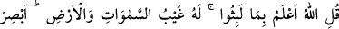
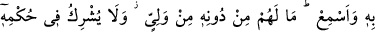
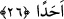

Arablar’a göre ise bu hesaplama kamerîdir. Üç yüz senede kamerî takvim, şemsî
takvimden dokuz yıl fazla olur. Çünkü bu iki takvim arasında her yüz yılda üç yıl fark
vardır. İşte bu sebeple âyette “dokuz yıl da ilâve ettiler” buyrulmuştur.
Şemsî yıl, güneşin bir burçtan ayrıldığı noktaya ulaşma müddetidir. Bu da 365 gün, 6
saattir. Kamerî yıl ise 12 kamerî aylardan oluşur. Bu da 354 gün, 6 saattir.
Kâşifî der ki: “Üç yüz güneş yılı, tam olarak ay yılı hesabıyla üç yüz dokuz yıl iki ay
dokuz gün olur.
26. De ki: Ne kadar kaldıklarını Allah daha iyi bilir. Göklerin ve yerin gizli bilgisi
O’na aittir. O’nun görmesi de, işitmesi de şâyân-ı hayrettir. Onların (göklerde ve
yerde olanların), O’ndan başka bir yöneticisi yoktur. O, kendi hükümranlığına
kimseyi ortak etmez.
Beğavî şöyle der: “Onların mağarada kaldıkları süre zikrettiğimiz gibidir. Eğer bu
konuda seninle tartışacak olurlarsa, onlara cevap ver ve:” “De ki: “Onların ne kadar
kaldıklarını Allah daha iyi bilir.” yâni onların orada kaldıkları zamanı Allah daha iyi
bilir. Çünkü gizlilikleri bilmek sadece O’na mahsustur. Bu sebeple şöyle buyurmuştur:;
“Göklerin ve yerin gizli bilgisi” yâni yeryüzündekilere göre bilinmez olan hususlar
sadece “O’na âiddir. O’nun görmesi de, işitmesi de şâyan-ı hayrettir.” Cenâb-ı Hak
her mevcûdu görücüdür, hem de ne görücü! İşitilen her şeyi işiticidir, hem de ne işitici!
Bunun anlamı; Allah, görülebilen her varlığı en iyi gören ve bütün sesleri en iyi
işitendir, demektir. Buradaki taaccübün gerçek anlamda olmaması, bunu Allah’a isnâd
etmenin imkansızlığına binâendir. Bilakis bu, O’nun görülenler ve işitilenlere dâir
ilminin idrâk edenlerin idrâkinin ötesinde olduğuna delâlet eder. Her şeyi görmekten ve
işitmekten O’nu hiçbir şey engelleyemez. O’na mâni olabilecek hiçbir perde yoktur.
O’nun görmesi ve işitmesine cisimlerin latif-kesif, büyük-küçük, gizli ve açık olması da
mâni değildir. Herhalde burada Hak Teâlâ’nın her şeyi en iyi görür olduğunu önce
zikretmesi, sadedinde olduğumuz şeyin görülenler cümlesinden olduğundandır.
et-Te’vîlâtü’n-Necmiyye’de şöyle der: “O’nun görmesi de, işitmesi de şâyân-ı
hayrettir.” Yâni O, bütün varlıkları görür ve bütün sesleri işitir. O halde sen O’nunla
gör ve O’nunla işit.”
Kayserî (r.h.) şöyle der: “Allah’ın işitmesi, cem‘u’l-cem‘ makamında kelâm-ı zâtînin
hakîkatiyle alâkalı ilmiyle ve cem‘ makamında a‘yân tecellîsinden ibârettir. Buradaki
ayrılma zâhiren ve bâtınendir, görme (şuhûd) yoluyla değil. O’nun görmesi ise tecelli